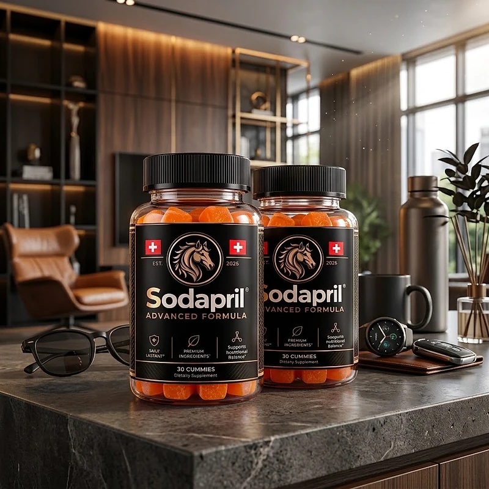
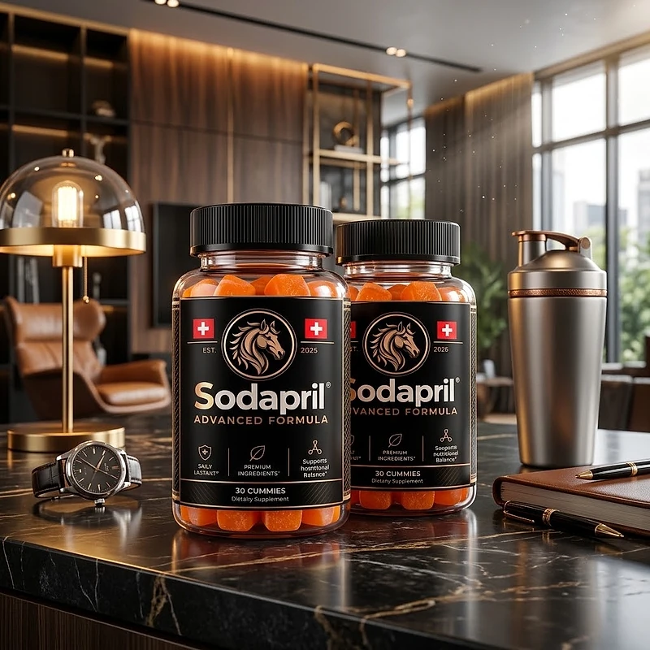
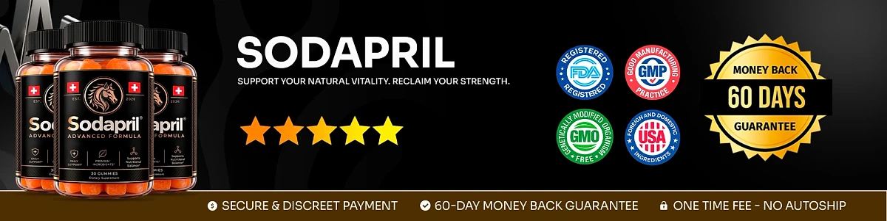

What Is Sodapril And How Does It Work?
Sodapril is a dietary supplement in gummy form designed to support daily male wellness, including energy, stamina, circulation, confidence, and overall vitality for adult men who want to address the low energy, reduced drive, and declining physical performance that can build up with age and demanding routines through a natural, dependable approach — without complicated regimens, synthetic boosters, or temporary quick fixes.
It utilizes a proprietary blend of nine natural ingredients, including Muira Puama Extract, Maca Extract, Catuaba Extract, Green Tea Extract, Caffeine, Ashwagandha, L-Arginine, Tribulus Terrestris, and Horny Goat Weed Extract to support healthy circulation, sustained energy production, and a stronger sense of daily confidence, helping the body maintain its natural balance and physical readiness throughout the day.
The ingredients in Sodapril are carefully selected natural compounds that, according to the official website, target the key factors managing male vitality, drive, and energy: the idea that supporting the body with specific nutrients and botanicals helps men feel more capable, energized, and confident in their daily activities.
Rather than acting as a short-lived stimulant or artificial booster, Sodapril focuses on a consistent daily approach, working gradually alongside healthy habits to help maintain steady energy levels, improved stamina, and long-term physical wellness.
With consistent daily use, many users report feeling more energized and focused, experiencing improved physical endurance, and noticing a renewed sense of confidence, especially when combined with a balanced diet, regular exercise, adequate sleep, and proper hydration.
From a practical standpoint, Sodapril is a daily male wellness supplement with 30 gummies in each container, designed for convenient one-gummy-a-day use — helping you feel stronger, stay confident, and maintain control of your physical health without complicated steps.
Manufactured in the USA using globally sourced ingredients in a GMP-certified facility, with clearly labeled serving information and a transparent formula on every bottle, Sodapril is designed for regular daily use, focusing on safety, transparency, and quality for men seeking a natural, non-prescription route to sustained vitality.
Sodapril Ingredients
Every bottle of Sodapril contains a proprietary blend of nine natural ingredients in an 82 mg blend per gummy, equivalent to approximately 567 mg of dry powders, chosen to support male vitality, energy, circulation, and overall physical performance as part of a consistent daily routine:
Muira Puama Extract: A natural stimulant included, according to the official website, to support physical strength and circulation by optimizing blood flow and activating the body’s circulatory response.
Maca Extract: An adaptogenic superfood selected to combat cellular fatigue and regulate physical stress, providing essential nutrients that support steady energy production.
Catuaba Extract: A traditional tonic included to increase physical endurance, improve peripheral blood circulation, and optimize overall vitality.
Green Tea Extract: A natural antioxidant chosen to support the body’s metabolic rate, fight free radicals that cause tiredness, and optimize the conversion of nutrients into clean energy.
Caffeine (5 mg): A fast-acting energy activator included to elevate alertness and drive by stimulating the central nervous system to fight fatigue.
Ashwagandha: A time-tested adaptogen selected to help the body defend against daily wear and tear by regulating bodily responses to everyday stress and balancing the nervous system.
L-Arginine: An amino acid included to support healthy blood flow and circulation, which may contribute to improved physical performance and endurance.
Tribulus Terrestris: A botanical extract traditionally used to support natural vitality, physical stamina, and overall male wellness.
Horny Goat Weed Extract: A well-known botanical included to support energy, endurance, and healthy circulation as part of the daily formula.
Together, these ingredients work synergistically to support energy, stamina, circulation, and overall male vitality from within. The official website describes the blend as proprietary, with the total amount per gummy clearly labeled on the Supplement Facts panel.
Sodapril is designed for daily use, offering a natural, non-prescription approach to supporting male wellness, without complicated routines, harsh stimulants, or aggressive synthetic compounds.
Sodapril Side Effects
Sodapril is generally considered well tolerated and is designed for adult men of different ages and lifestyles who are looking for a safe, natural, and balanced approach to daily wellness, especially those who prefer an easy daily routine to support energy, stamina, and circulation without resorting to risky solutions with severe side effects.
All ingredients used in Sodapril are listed on the Supplement Facts label, and the product is manufactured in the USA in a GMP-certified facility using globally sourced ingredients, with clearly labeled serving information on every bottle, reinforcing consistency, safety, and reliability.
With no widespread reports of serious side effects, Sodapril is generally considered a well-tolerated option. Because the formula contains botanical extracts, caffeine, and amino acids, people with caffeine sensitivity, known allergies, or existing medical conditions should start cautiously and stop using it if they notice any discomfort. It is not intended to diagnose, treat, cure, or prevent any disease, and individual results may vary.
As a standard wellness recommendation, anyone who is pregnant, nursing, under 18, or living with a known medical condition should consult a physician before starting Sodapril. The same applies to anyone taking prescription medications, ensuring it fits safely within their personal wellness plan.
Sodapril Dosage
Sodapril is meant to be taken once a day, every day, and it is designed to fit easily into a daily routine, making consistency simple and convenient. It comes as orange-colored gummies in a bottle of 30, with no powders to mix, no pills to swallow, and nothing complicated to prepare.
The recommended approach is to take one gummy daily as a dietary supplement, or as directed by a qualified health care professional, following the directions printed on the label of your bottle. Taking Sodapril at the same time each day allows its ingredients to work consistently and support steady results.
For best results, consistency is key. Because supporting male vitality and energy is a gradual process, the official website presents Sodapril as a formula to be used continuously for several months as part of an ongoing wellness routine.
There is no need for complex schedules or multi-step routines. One simple daily gummy is designed to build lasting support gradually alongside a balanced diet, regular exercise, adequate sleep, and proper hydration.
As with any wellness product, it is important not to exceed the recommended serving size. Store in a cool, dry place away from excessive heat and humidity, and keep the bottle properly closed to help preserve freshness. Sodapril works best when used regularly, combined with balanced nutrition and healthy daily habits.
Sodapril – Refund Policy
You can order Sodapril with confidence, knowing that every purchase is protected by a 60-day money-back guarantee. This allows you to try the formula and decide if it delivers the vitality support you expect.
According to the official website, customers who are not completely satisfied after at least 30 days of use can contact support, and the refund request must be made within the 60-day guarantee period. All bottles must be sent back, whether they are opened or not, and the cost of sending them back is paid by the customer.
How the refund process works: If you decide Sodapril is not right for you, contact customer support at contact@customercs.com. The support team is described on the official website as ready to offer guidance and support throughout the process.
Customer Support Contact Information: the support email address is contact@customercs.com, and additional contact details are listed on the official website and in your order confirmation email.
Refund Processing Time: After your refund is processed, it may take 5 to 10 days to appear on your statement, depending on your bank or credit card provider.
This refund policy is designed to give customers a clear and transparent experience when trying Sodapril, allowing them to evaluate the product with minimal risk.
Sodapril Customer Reviews
-
Michael Thompson — Houston, TexasVerified Purchase – 6 Bottles
“If it wasn’t for Sodapril, I’d still be feeling stuck, overwhelmed, and wondering if I’d ever regain my confidence and vitality… But just a few weeks in, everything changed. Thanks to Sodapril, I’ve reclaimed my sense of purpose and strength, and my relationships have never been better. It’s like having a roadmap to the man I always knew I could be!”
-
James Miller — Denver, ColoradoVerified Purchase – 6 Bottles
“I was skeptical at first, but Sodapril completely turned my life around. Before, I felt like I was constantly battling low energy, self-doubt, and a lack of direction… Now, I wake up each day with focus and confidence, ready to take on anything. Sodapril made me feel unstoppable again!”
-
Robert Anderson — San Diego, CaliforniaVerified Purchase – 6 Bottles
“Before Sodapril, I felt like I’d lost my edge—always tired, frustrated, and unsure of what steps to take next. But within weeks, everything started to shift. Thanks to Sodapril, I’m more energized, focused, and driven than I’ve been in years. It’s the ultimate tool for men who refuse to settle!”
Sodapril – Where To Buy
Sodapril is sold through its official website, so if you decide to try it, it is important to be careful about where you purchase it. The official website is the only sales channel the manufacturer lists, and it does not point to marketplaces such as Amazon, eBay, or Walmart.
Listings on third-party platforms may look similar but cannot be verified as authentic, raising concerns about safety, quality, and ingredient freshness. Products purchased outside the official source may not be covered by the 60-day money-back guarantee.
For this reason, most customers recommend purchasing Sodapril only through the official website. Buying directly from the official source ensures you receive the authentic original product, with access to customer support and the full guarantee. According to the official website, every order is a one-time purchase, with no subscription, recurring charges, or hidden fees.
To avoid counterfeit batches and ensure maximum quality, always verify that you are ordering from the official Sodapril website before completing your purchase.
To ensure you’re getting the authentic product, most users choose to visit the official website.
Is Sodapril A Scam?
Based on what the official website discloses, Sodapril does not appear to be a scam. It is a real product, sold through an established retailer, and formulated to support male vitality, energy, stamina, and circulation as part of a consistent daily routine.
The ingredients used in Sodapril — Muira Puama Extract, Maca Extract, Catuaba Extract, Green Tea Extract, Caffeine, Ashwagandha, L-Arginine, Tribulus Terrestris, and Horny Goat Weed Extract — are named on the Supplement Facts label for transparency, with the total proprietary blend clearly stated at 82 mg per gummy.
In addition to its transparent formula, Sodapril is manufactured in the USA in a GMP-certified facility using globally sourced ingredients, with clearly labeled serving information and ingredient amounts on every bottle, according to the official website, focused on safety, transparency, and consistency.
Many users report feeling more energized, focused, and confident in their daily activities, making Sodapril a practical option for men seeking natural support for sustained vitality. Results vary from person to person, and no formula can promise a specific outcome.
Sodapril is backed by a 60-day money-back guarantee, and orders are one-time purchases with no autoship, recurring charges, or hidden fees. This policy underscores the manufacturer’s commitment to customer satisfaction and product integrity.
If you are looking for a simple daily gummy to support energy, stamina, circulation, and overall male wellness without complicated routines, Sodapril is worth considering — especially when purchased directly from the official website.
For those who want to verify product details or check current availability, the official Sodapril website remains the safest option.

Check Availability On Official Website
